Colorimetry
Colorimetría cuantificada en 4 estados de maurez: Inmaduro (I), Medio Maduro (MM), Maduro (M), Sobre Maduro (SM).
En 3 poblaciones de Entre Ríos: Concordia, PN El Palmar y Gualeguaychú.
Escala CieLab: L: luminosidad +a: rojo -a: verde +b: amarillo -b: azul
colorímetro digital 3NH NH300
Estadística descriptiva
L
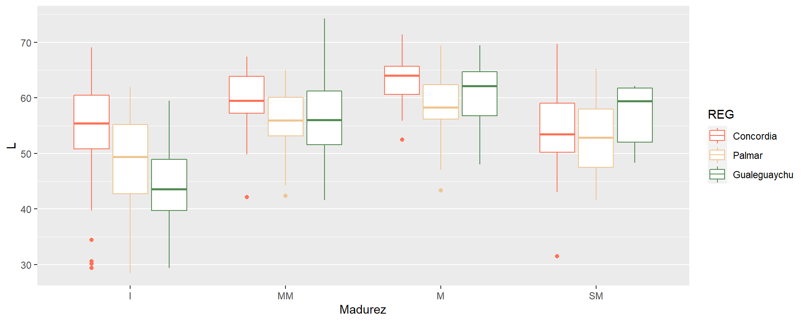
a
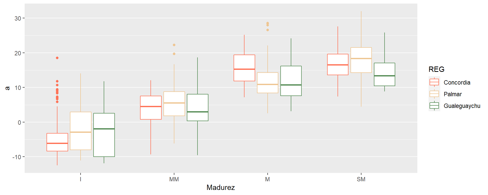
b
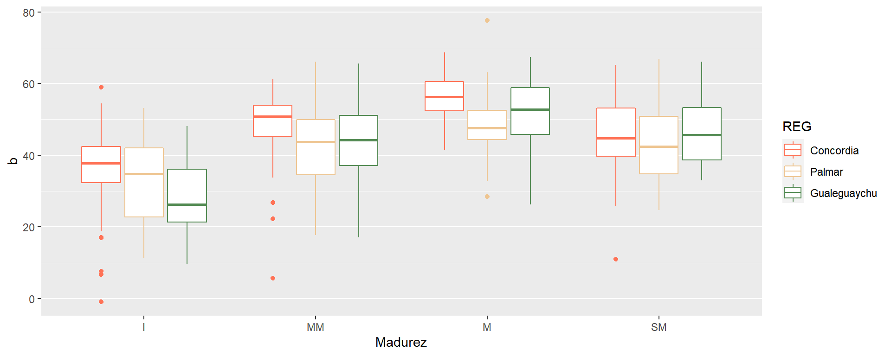
Densidad (frecuencia) de valores encontrados para los 4 estados de madurez con promedio.
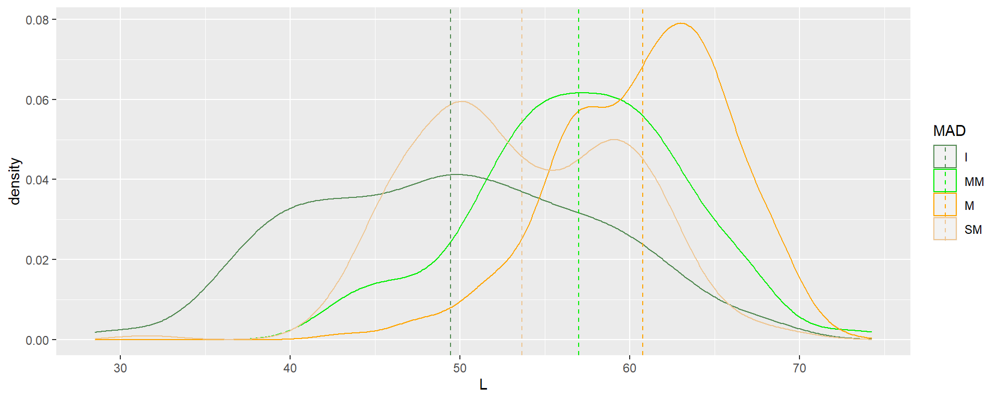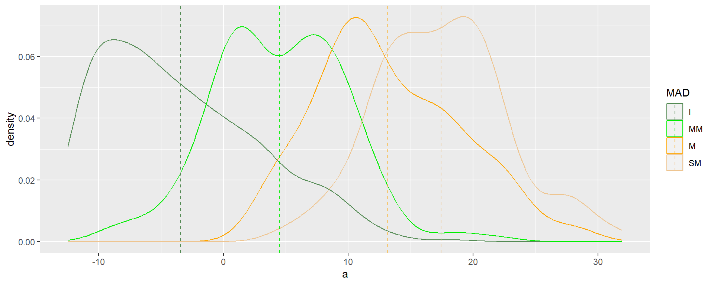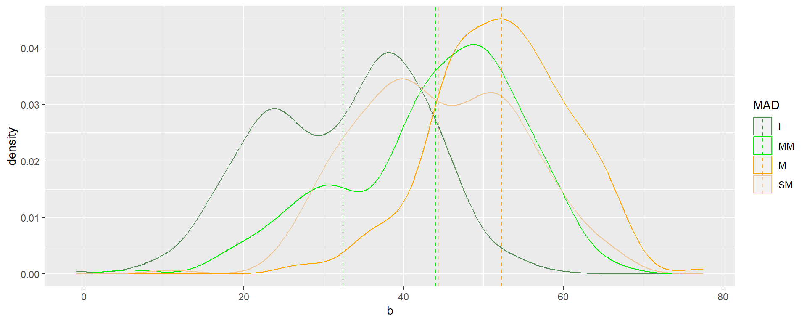 Tabla de color promedio por madurez.
## madurez Lc ac bc
## 1 I 49.42974 -3.428042 32.43526
## 2 MM 56.98465 4.479208 43.99984
## 3 M 60.77104 13.187747 52.28874
## 4 SM 53.63335 17.423670 44.42711Densidad (frecuencia) de valores encontrados para los 4 estados de madurez con línea de mayor frecuencia. 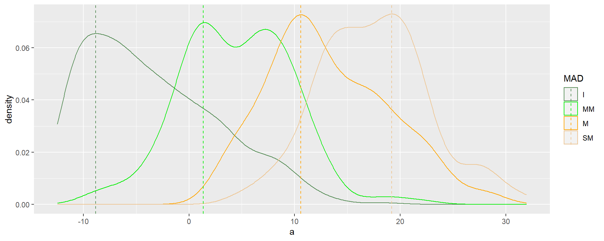 Tabla de color más frecuente por madurez.
## mad Lfc afc bfc
## 1 I 49.88773 -8.821792 38.20100
## 2 MM 57.29858 1.356885 48.71289
## 3 M 63.01838 10.579560 52.20948
## 4 SM 50.07214 19.193400 38.95771Paleta de colores.
A caption
IP: inmaduro promedio, IF: inmaduro con mayor frecuencia, MMP: medio maduro promedio, MMF: medio maduro con mayor frecuencia, MP: maduro promedio, MF: maduro con mayor frecuencia, SMP: sobre maduro promedio, SMF: sobre maduro con mayor frecuencia.
Estadística inferencial: estados de madurez.
L
## Denom. DF: 1022
## numDF F-value p-value
## (Intercept) 1 74047.04 <.0001
## MAD 3 149.80 <.0001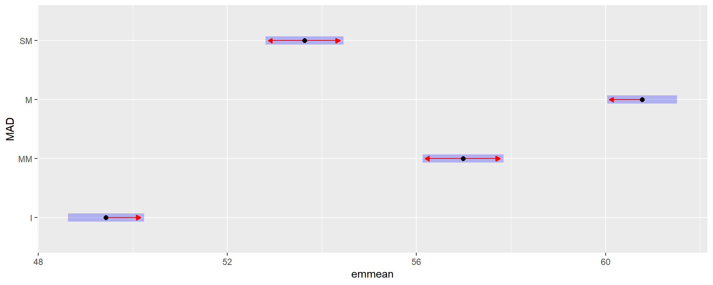
a
## Denom. DF: 1022
## numDF F-value p-value
## (Intercept) 1 50723.88 <.0001
## MAD 3 684.81 <.0001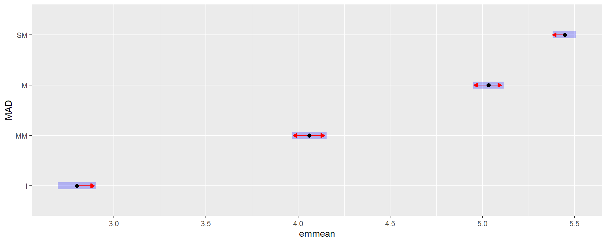
b
## Denom. DF: 1022
## numDF F-value p-value
## (Intercept) 1 18278.94 <.0001
## MAD 3 222.33 <.0001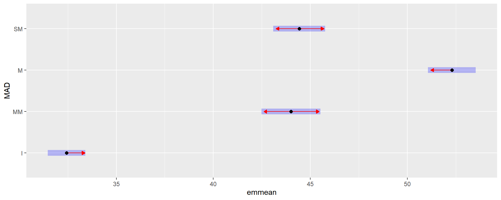
Conclusión
Se encontraron diferencias significativas para todos los estados de madurez en las 3 escalas L, a y b. Sólo en la escala b no se diferencia MM de SM.
Estadística inferencial: poblaciones.
L
## Linear mixed model fit by REML ['lmerMod']
## Formula: L ~ 1 + (1 | REG/ACC/id)
## Data: data
##
## REML criterion at convergence: 6668.3
##
## Scaled residuals:
## Min 1Q Median 3Q Max
## -2.87068 -0.47702 0.03217 0.51644 2.16809
##
## Random effects:
## Groups Name Variance Std.Dev.
## id:(ACC:REG) (Intercept) 29.15 5.399
## ACC:REG (Intercept) 14.23 3.772
## REG (Intercept) 10.68 3.268
## Residual 17.14 4.140
## Number of obs: 1026, groups: id:(ACC:REG), 513; ACC:REG, 51; REG, 3
##
## Fixed effects:
## Estimate Std. Error t value
## (Intercept) 53.76 1.98 27.15## [[1]]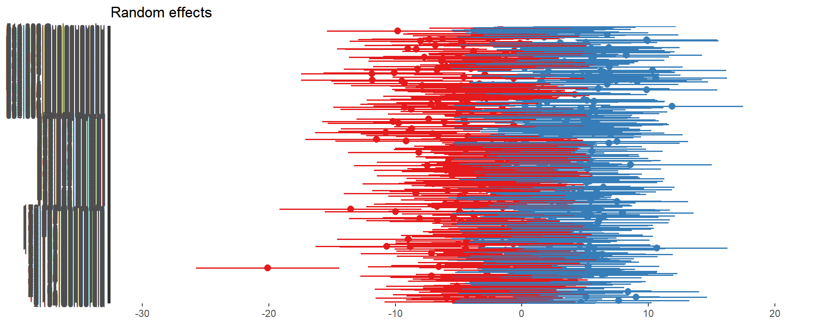
##
## [[2]]
##
## [[3]]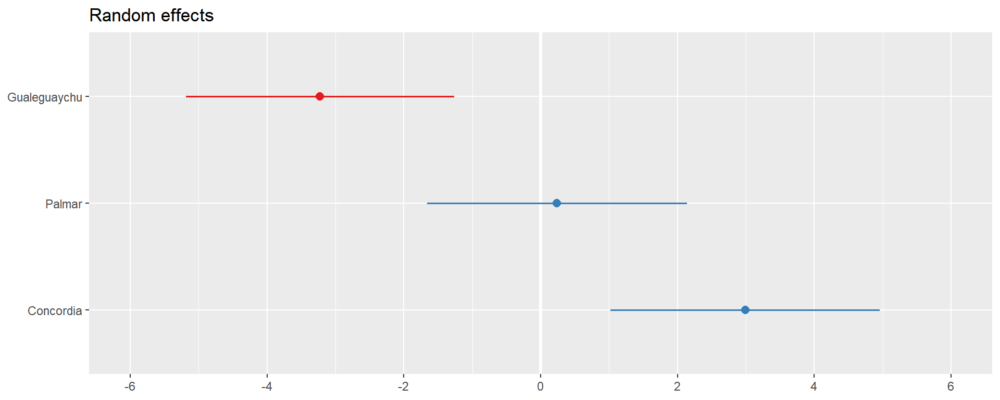
a
## Linear mixed model fit by REML ['lmerMod']
## Formula: a ~ 1 + (1 | REG/ACC/id)
## Data: data
##
## REML criterion at convergence: 6799.7
##
## Scaled residuals:
## Min 1Q Median 3Q Max
## -2.86950 -0.41349 -0.00893 0.45624 2.90675
##
## Random effects:
## Groups Name Variance Std.Dev.
## id:(ACC:REG) (Intercept) 50.60 7.113
## ACC:REG (Intercept) 32.96 5.741
## REG (Intercept) 19.33 4.397
## Residual 14.05 3.748
## Number of obs: 1026, groups: id:(ACC:REG), 513; ACC:REG, 51; REG, 3
##
## Fixed effects:
## Estimate Std. Error t value
## (Intercept) 5.253 2.687 1.955## [[1]]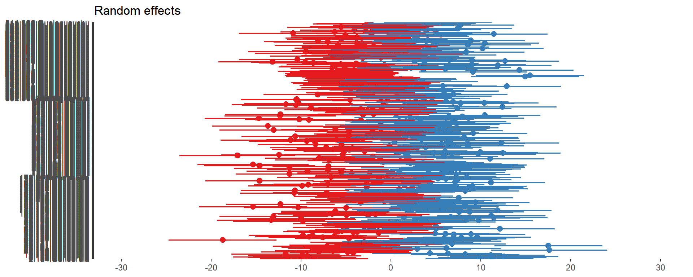
##
## [[2]]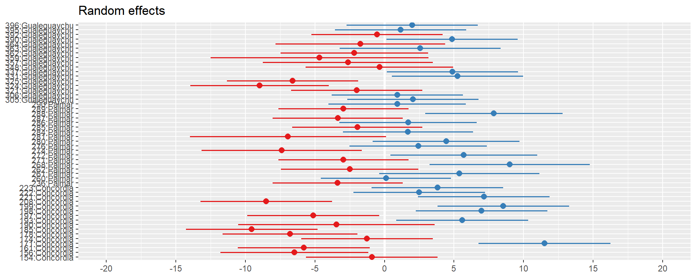
##
## [[3]]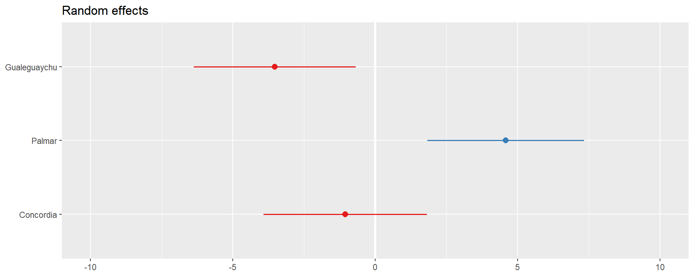
b
## Linear mixed model fit by REML ['lmerMod']
## Formula: b ~ 1 + (1 | REG/ACC/id)
## Data: data
##
## REML criterion at convergence: 7609
##
## Scaled residuals:
## Min 1Q Median 3Q Max
## -3.9114 -0.4641 0.0154 0.5155 3.5198
##
## Random effects:
## Groups Name Variance Std.Dev.
## id:(ACC:REG) (Intercept) 60.95 7.807
## ACC:REG (Intercept) 39.28 6.268
## REG (Intercept) 14.65 3.828
## Residual 47.25 6.874
## Number of obs: 1026, groups: id:(ACC:REG), 513; ACC:REG, 51; REG, 3
##
## Fixed effects:
## Estimate Std. Error t value
## (Intercept) 40.648 2.417 16.82## [[1]]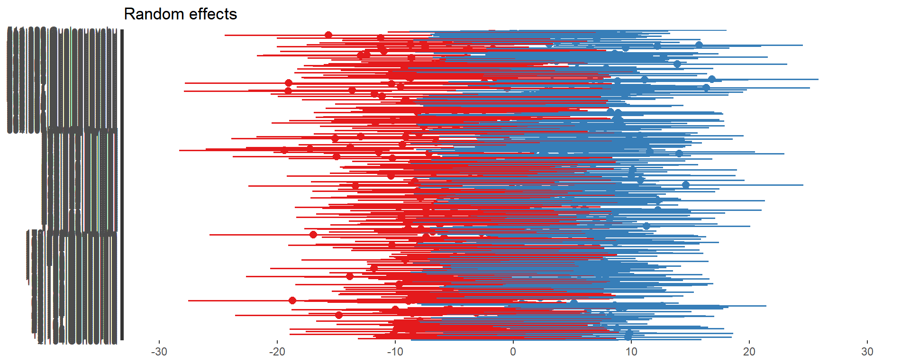
##
## [[2]]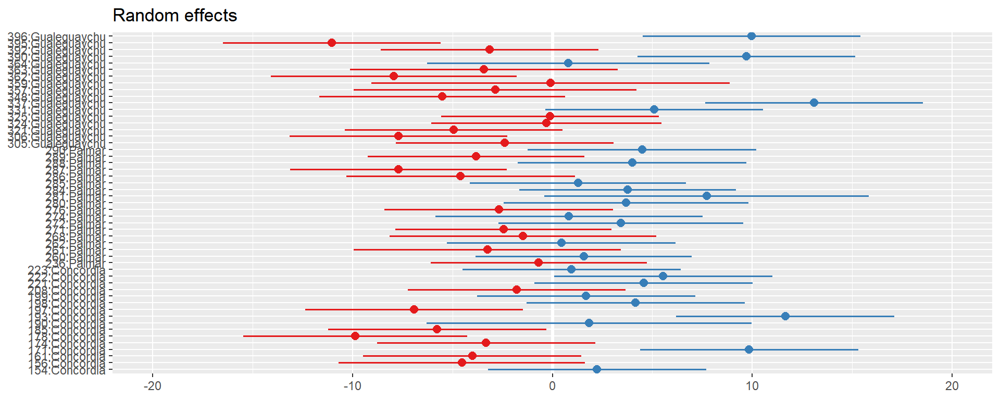
##
## [[3]]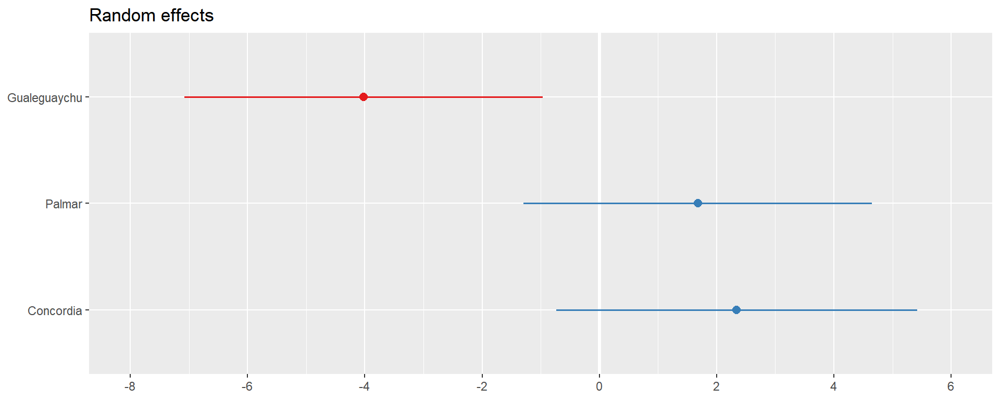
Significación
## Data: data
## Models:
## L23: L ~ 1 + (1 | REG)
## L2: L ~ 1 + (1 | REG/ACC/id)
## npar AIC BIC logLik deviance Chisq Df Pr(>Chisq)
## L23 3 7134.8 7149.6 -3564.4 7128.8
## L2 5 6681.3 6706.0 -3335.7 6671.3 457.51 2 < 2.2e-16 ***
## ---
## Signif. codes: 0 '***' 0.001 '**' 0.01 '*' 0.05 '.' 0.1 ' ' 1## df AIC
## L2 5 6678.331
## L23 3 7131.846## Data: data
## Models:
## a23: a ~ 1 + (1 | REG)
## a2: a ~ 1 + (1 | REG/ACC/id)
## npar AIC BIC logLik deviance Chisq Df Pr(>Chisq)
## a23 3 7601.8 7616.6 -3797.9 7595.8
## a2 5 6813.3 6837.9 -3401.6 6803.3 792.53 2 < 2.2e-16 ***
## ---
## Signif. codes: 0 '***' 0.001 '**' 0.01 '*' 0.05 '.' 0.1 ' ' 1## df AIC
## a2 5 6809.680
## a23 3 7598.356## Data: data
## Models:
## b23: a ~ 1 + (1 | REG)
## b2: b ~ 1 + (1 | REG/ACC/id)
## npar AIC BIC logLik deviance Chisq Df Pr(>Chisq)
## b23 3 7601.8 7616.6 -3797.9 7595.8
## b2 5 7622.4 7647.1 -3806.2 7612.4 0 2 1## df AIC
## b2 5 7618.999
## b23 3 7598.356Coeficientes de correlación intra clase (CCI)
Varianza residual sobre la varianza total
L
| L | |||
|---|---|---|---|
| Predictors | Estimates | CI | p |
| (Intercept) | 53.76 | 49.87 – 57.65 | <0.001 |
| Random Effects | |||
| σ2 | 17.14 | ||
| τ00 id:(ACC:REG) | 29.15 | ||
| τ00 ACC:REG | 14.23 | ||
| τ00 REG | 10.68 | ||
| ICC | 0.76 | ||
| N id | 513 | ||
| N ACC | 51 | ||
| N REG | 3 | ||
| Observations | 1026 | ||
| Marginal R2 / Conditional R2 | 0.000 / 0.759 | ||
a
| a | |||
|---|---|---|---|
| Predictors | Estimates | CI | p |
| (Intercept) | 5.25 | -0.02 – 10.52 | 0.051 |
| Random Effects | |||
| σ2 | 14.05 | ||
| τ00 id:(ACC:REG) | 50.60 | ||
| τ00 ACC:REG | 32.96 | ||
| τ00 REG | 19.33 | ||
| ICC | 0.88 | ||
| N id | 513 | ||
| N ACC | 51 | ||
| N REG | 3 | ||
| Observations | 1026 | ||
| Marginal R2 / Conditional R2 | 0.000 / 0.880 | ||
b
| b | |||
|---|---|---|---|
| Predictors | Estimates | CI | p |
| (Intercept) | 40.65 | 35.91 – 45.39 | <0.001 |
| Random Effects | |||
| σ2 | 47.25 | ||
| τ00 id:(ACC:REG) | 60.95 | ||
| τ00 ACC:REG | 39.28 | ||
| τ00 REG | 14.65 | ||
| ICC | 0.71 | ||
| N id | 513 | ||
| N ACC | 51 | ||
| N REG | 3 | ||
| Observations | 1026 | ||
| Marginal R2 / Conditional R2 | 0.000 / 0.709 | ||